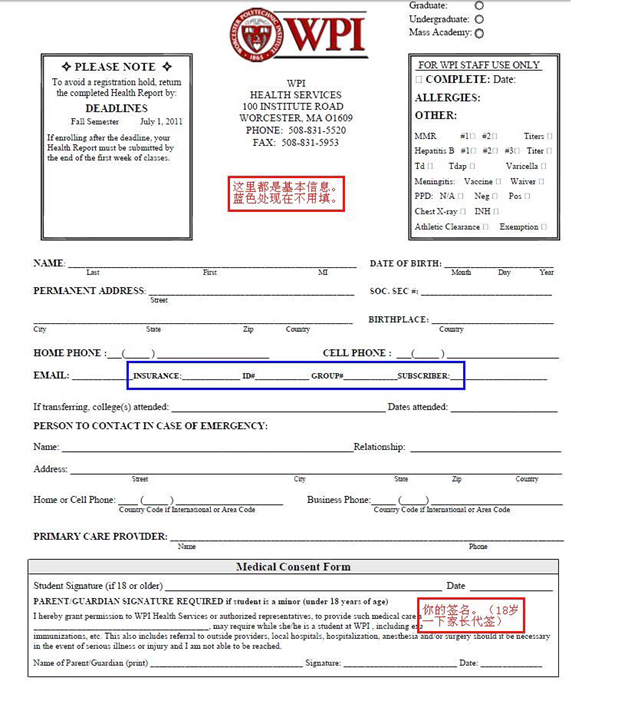
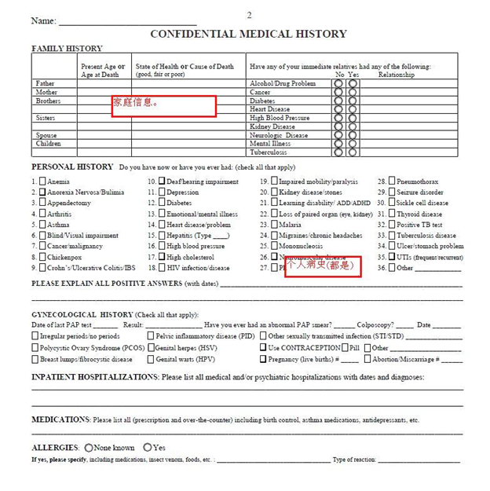
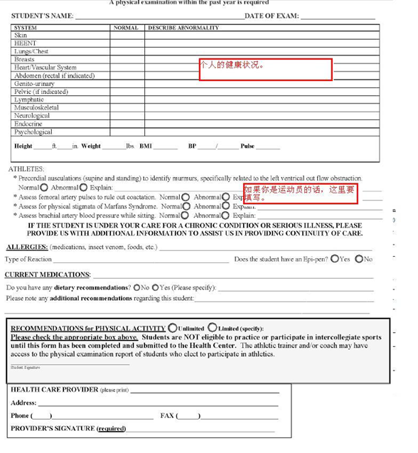
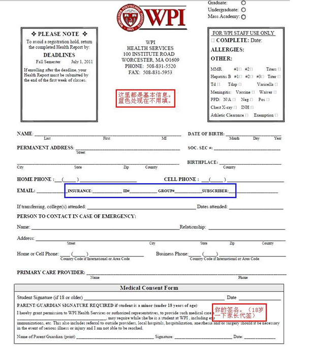
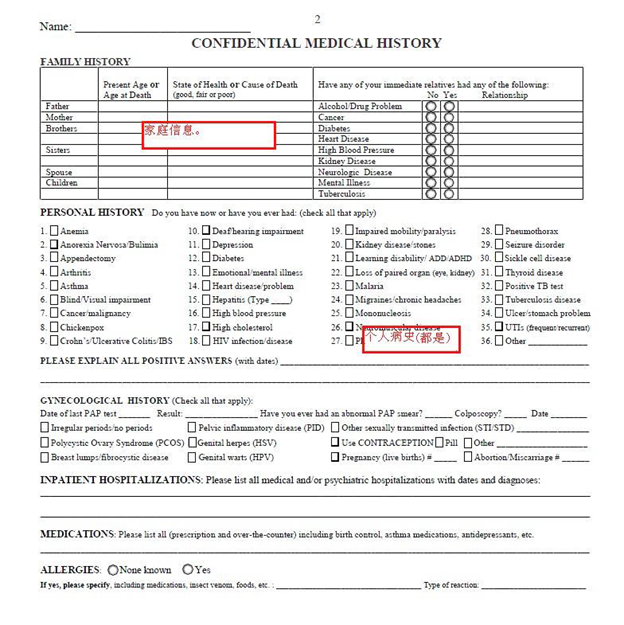
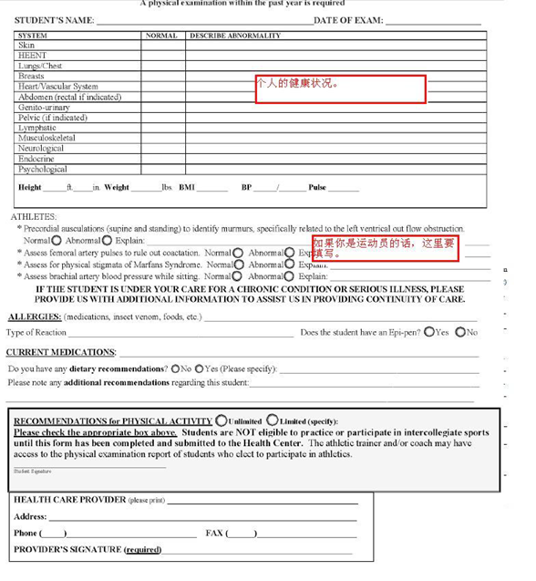

{{selected}}
亲爱的同学:
你好!
首先我们代表WPI中国学生学者联谊会Chinese Students & Scholars Association(CSSA)欢迎您来WPI学习深造! WPI地处美国历史最悠久的马萨诸塞州,不仅人文气息浓厚,而且高科技产业由于众多大学的支撑而非常发达。对于WPI的同学来说,无论理工文商,这里都是学习和工作的理想地点。
WPI CSSA主要是由来自中国的学生和学者组成的志愿性组织。目前我们已有超过300名成员,其中包括学生、教授、访问学者及家属等。CSSA的主要任务是为中国学生学者提供一些生活和学习上的帮助,包括接新生、帮助新生安顿和适应这里的生活、举办中秋晚会、春节晚会等具有中国特色的活动等等。 这本新生手册主要是为了帮助刚来到美国,来到Worcester的新同学、朋友们尽快地适应这里的生活、学习和工作。本手册经过WPI中国学生学者联谊会成员们的共同努力制作而成。这里, 我们向所有参与编写和校正的同学们表示深深的感谢! 本手册中不足之处恳请大家及时指正,我们会不断地更新和完善。本手册中出现的一些网上购物地点或者订机票代理等的电话,完全是同学们平时积累的经验所得,不存在任何商业广告行为。 我们也真诚地希望能有更多热心的同学、朋友们加入WPI中国学生学者联谊会,互相帮助,共同努力, 更好地为这里的中国学生学者们服务! 最后, 祝大家在WPI过得愉快、充实!
CSSA 敬上 2017年夏
{{selected}}
(1) CSSA 2018 FALL WeChat Group: 请加微信：chenjiahui11993, 备注专业姓名，之后会拉你入群，进群请备注姓名。 定时清理人员,请及时更改。
(2) WPILIFE网站
WPILIF是一个CSSA官方的信息分享网站，网址是http://wpilife.org需要注册。 WPILIFE上会经常有学校活动信息发布，同时也有很多同学在该网站上出售物品， 新生也可以在这个网站以较低的价格买到学长学姐们的二手商品，给大家都提供了便利。 发布商品教程请看http://wpilife.org/manual/6，非常简单明了！ 同时也请大家提高警惕，防范骗子，及时举报。
CSSA 简介
对WPI CSSA工作的意见与建议:
请发邮件到: 151yuhongyi@gmail.com; yxq722@gmail.com
对WPIFLIE 网站的意见与建议:
请发邮件到: hbchenjh@gmail.com
Chinese Students & Scholars Association (CSSA), 即中国学者联谊会:
Email: cssa@wpi.edu
Chinese Student Association (CSA), 即中国学生会:
Email: csa@wpi.edu
International House (IH), 即 WPI 的国际学生管理部门:
Phone: +1-508-831-6030
Email: ih@wpi.edu and website Webpage: http://www.wpi.edu/offices/ih/
{{selected}}
网上的签经有很多,这里就不多说了。附上几个国内比较有名的留学论坛的签证版网址。
关于签证,这里要解释一下。你在美国能够呆多久不是签证官决定的, 而是你刚进入美国的机场的入境官决定的。他会根据你的签证和 I-20 来判断你在美国能呆多久。一般都是D/S（Duration of status）。 这意味着只要你不出美国,你可以一直待到结束学业。现在从大陆来的同学签证一般都是5年期的,意思是你可以在5年内无限次进出美国，但是也存在被check后只有一年的情况。如果你在签证过期后出了美国国境,再次回到美国就需要重新签证（一般即将过期的话最好也重新签,以免出问题，比如签证 6.18到期,你打算6月1号的飞机回美国,就最好去重新签一个）。 International House的回复是一般WPI的学生签证过期又不想回家的,可以去墨西哥或者加拿大去重新签证。为什么不能在美国本土重新签证呢？因为管签证的是美国大使馆。在美国本土怎么可能有美国大使馆呢？ （我觉得挺扯淡的。其他国家都行。如果签证过期之后,只要不出美国是没有问题的。因为签证代表的是你合法进入美国的期限，跟出去没有关系。）
可以找当地的机票代理，但因为是单程会比较贵。买的早可能更便宜，买的迟就贵。当然也看地区，一般从北京、上海、香港可能相对便宜，经停点越多越便宜。定机票后请将航程信息填入CSSA接机表，等统计完成后会放出统计结果，具体链接请见群分享或询问CSSA。
订机票时如果需要到第三个国家转机，请提前查好是否需要该国家的签证。
建议订美国东部时间7pm之前到达的飞机，以防突发情况发生无人接机.
首先，limo不是加长凯迪拉克，它就是叫limo而已......一般也就是轿车或者van。 当大家签证办好之后请到新生群里询问一下在同一地区的同学，大家尽量约好一起飞。一是一路上互相有个照应，一起聊个天吃个饭什么的，等待时间长的话还可以轮流睡觉；二来是到伍斯特之后可以大家一起订limo去学校。学长姐们毕竟有限，他们也都有自己的事情要忙。
订 limo 的网站:
- Knight Limo: www.knightlimo.com
- Worcester Limo: www.wlimo.com
注意，一辆车好像只能指定送到一个地点，这是规定，你可以试着跟司机说好话让他多送几个地点。成功率好像不高，成功的话记得多给小费，不然可能没有下次了。 订limo流程:订车的时候选择付现金，这样如果司机服务态度不好，比如不帮你提箱子之类的就少给点小费。 小费一般10%。
每年CSSA会组织学长学姐的老司机群提供有偿接机服务，详细信息请关注WPICSSA微信平台，请在官方新生群里发信息，会有CSSA的学长学姐联系老司机群的。
大家拿到offer的时候应该也同时看到学校要求要寄体检单子和疫苗注射的单子，如果没有请到此处下载 http://www.wpi.edu/Admin/Health/forms.html。在国内一般都是去各地的国际旅行卫生保健中心去体检（还有些同学去大医院也行，主要就是让他们填单子盖章）。带着身份证、体检表、2张二寸证件照、小时候的疫苗记录本、1000元人民币（其实用不了这么多）去就好了。
因为可能要做一个TB皮试，有些地方不是每天可以做，所以去之前大家可以打个电话去问一下一周哪几天可以做TB皮试，不然可能就要多跑一趟。然后，如果疫苗本找不到了也没关系，大不了多扎几针
体检和疫苗两个部分哪个先做都可以，完了会给一本黄色的体检证和一本深红疫苗证。这两个如果你去其他国家也会认，因为上面盖着中国国家检疫检验局的大章。虽然学校让把体检表寄回来，其实也可以来了以后再交。期间你的账号会被hold而已，大概就是不能自己在网上注课。学校网站上的四份表都要下载填写。体检要尽早，很多疫苗要打多次，然后其间要隔三四个星期，所以体检越早越好。
体检表格指南请见附录。 另外请参考CD(有分地区介绍):
1)临时住房
a. 想要来之后再看房子的同学可以暂时住在International House三天，需要提前申请，租金是20美元/天/人。房子很紧，越早申请越好。
b. 租不到International House住房的同学，可以找老生帮忙，借住几晚，按天付房租。建议价格20-25美元/天/人。这个钱是帮老生付你居住期间的水费电费网费等等。
强烈建议不要相信各种中介！！！！！如果非要租中介的房子请一定联系学长学姐实地考察，再三斟酌！尤其是中国房东的房子！这里重点强调！老中坑老中就是这么开始的。
2）关于房子
首先，美国的房子分House和Apartment。House就比较有乡村风情，一幢一幢的房子。整幢租给你的话，可能就是大家公用一楼的厨房客厅，二楼各睡各屋；另一种就是House里两层或三层，每层住3个人，然后厨房客厅卧室都在一层。Apartment 就是公寓了，公寓一般比较现代化，房子也会新一点。 新生可以在来之前就找好房子，如果你想亲自看看这边住房的条件再决定，也可以来了以后再找。按照所有权，房子大概分为以下两类：
a. On-CampusOn-campus的房子是学校的，分布在学校周围比较近的区域。月租500-600美元，包热水包电（美国这边未加热的水是免费的）；有家具（furnished）（一般有Twin size的床，桌子，椅子等）。500美元的是三个人share一层，3个Bedroom，一个卫生间，一个厨房，1-2个living room；600美元的是三个人share整个两层的House，一楼是厨房客厅，二楼是Bedrooms。
学校的房子有一些有洗衣机和烘干机，免费无限量使用，另一些只有laundry room/center，收费。除了设备齐全、空间大之外，学校的房子不需要deposit，lease也比较灵活（每个月一签）。如果想搬走，大概提前一个半月通知管理员就可以。另外，学校还有专门的服务人员负责维修，如果是下水道堵了之类的小事情，一般都是免费的。
申请学校的房子，请联系 Residential Services: Amy Beth Polonsky Phone: +1 508-831-5130; Email: apolonsky@wpi.edu 遇到高峰期，可能要排上比较久时间(运气好的话一般可以排到)。 注意: 申请学校的房子不需要提前找好roommate,都是学校安排。
b. Off-CampusOff-campus的房子一般是Owner的，也有个别是中介公司旗下的，有的距离学校很近，像West Street，隔条Institute Road就是学校；有的则比较远，像William Street,etc,走路大概需要10几分钟。 房子一层3-4个Bedroom是最普遍的房型，有的房子两层4-5个Bedroom，很多把Living room改造成Bedroom。很多时候是整体出租，需要大家租房之前自己找好室友。月租350-600美元不等。房租低的一般不包括任何Utilities，像电和气都得自己付。暖气分三种，烧油的，烧气的和电暖。 烧油的，油大概570美元150 gallon，可以用一个多月；电暖大约 30 美元/月/人；气暖暂时不了解。一般烧油和气的不给力还贵。然后，如果是包水电暖的房子，注意问一下房东是不是有限制，比如暖气是不是随便开之类的。
还有一点就是有的房子是带家具的，价格会高点，便宜的很多基本是没有家具的。对新生来说，住Furnished apartment会方便一点，毕竟第一年来什么都没有，要一样一样家具买起来还是挺累人的。如果找的是Unfurnished apartment，那么来了以后可以买点家具，例如Wal-Mart, Target, IKEA, Home Depot等。如果想找价廉物美的家具，可以去Yard sale看看，会比店里便宜不少，或者去上面的那个Craigslist上去淘，经常能遇见比较便宜的。旧家具还可以去Park Ave的Good Will，和Chandler Street上面的旧家具店买（如果早点儿来，还可以捡到路边的椅子，桌子之类的家具。床垫沙发之类的不要轻易往家里搬，容易藏匿bad bug)。 校外的房子，一般都要签一年或者至少9个月的lease，还要交safety deposit，第一个月和最后一个月的房租。在这里必须要提醒大家的是，一定要考虑清楚以后，才能慎重地签下你的lease。一不经意就可能碰到恶房东，可别小看这房东的作用，一个可怕的房东，会给你带来一年阴沉的心情，最后还可能拿不回押金。Nice的房东会很体贴，例如帮你修东西，整理草坪，放置家具等等。找房子最好自己看个仔细清楚明白。想买车的同学还要看租住的房子有没有停车位置，或者周围是否适合街边停车。冬天的时候路边有雪，街边停车位比较难找，有个固定车位还是挺方便的。 房子的位置也要考虑，尽量离学校近一点。第一年没有车，住的远会比较麻烦。买车了以后可以考虑离学校远一点得房子（学校规定距离学校超过1 mile的可以办停车证）。下图是我们总结的所谓安全区，供参考。

一般在学校附近区域内的房子综合条件比较理想，无论远近、安全、安静程度都比较好。总体来说，住房的综合条件由西向东，由北向南逐渐递减。Park Ave以西是一个山坡，也是可以考虑的。Highland以南的地区，在Dix street和Bowdoin street上现在也有很多中国学生租住。
网上在线找房子有两个地方:
- WPI Apartment Finder System: http://www.wpi.edu/offices/rso/aptfinder.html
- Craigslist网站Worcester地区WPI附近: http://worcester.craigslist.org/search/apa?query=WPI
前者信息更新较慢，但是集中，都是针对WPI的。后者更新极其迅速，但是未必有很近的房子，而且很多重复的。在使用后面这个叫做craigslist的网站的时候，注意在搜索里打WPI，这样你不至于找到走一天也到不了WPI的房子了。 总而言之，不能简单比较房租，要比较加上各种因素以后的价钱和综合性能。
每个航空公司的限重是不同的，所以不在这里一一列出。所有情况可以在航空公司的官方网站找到。之前很多航空公司可以免费托运2个23KG的箱子，好像现在有规定只能带一个箱子了；托运箱子一般是30寸的。由于大家定的航空公司都不一样，而且是新规定，所以具体要求请同学们自行与航空公司确认。 绝对不要超重。一般超过1-2KG不算超重。超重的话国内会罚500RMB。不要带任何肉类食品、土壤、植物、种子。真空包装的肉类（如烤鸭，临武鸭，绝味......怎么全都是鸭......）之类通常也会被没收。带太多的话，可能罚款；听说过罚款300美元的，但不确定罚款会不会视情况而定。进入美国的托运行李是不能上锁的，除非是TSA（transit security authority, 美国国土安全部下面的一个部门）同意的锁子。这些锁淘宝上有卖, 不过建议一点都不锁。由于有开箱检查的可能性,因此这种情况下上了锁可能会被直接撬开。可以用打包带捆好箱子,上面贴上个人信息。贵重物品请务必随身携带,谨防丢失。
b.书本教材可以通过以下链接找到，因为每门课每一届用的书可能不一样，请务必先查证后再买：
- http://wpi.bncollege.com/webapp/wcs/stores/servlet/TBWizardView?
- catalogId=10001&storeId=32554&langId=-1
来之前问问这边的师兄师姐需要什么教科书,看看国内是否有影印版。否则这边教材很贵，国内人民币76元的书，这里可以卖122美元。不过如果你的行李超重就算了，还有其他办法省教材费。非要带的话，可以通过海运提前一两个月把一些你觉得很有用的但是又不能托运的书寄过来，让这边的师兄姐们代为接收。也可以在国内的当当网订购直接海运过来，每本书的运费是书价的一半。
c.衣物服饰如果是夏天过来，T恤要多带一些，因为会换的比较勤快。但是T恤这边卖的很便宜，所以也要酌量携带。这里的夏天相对来说凉快一点，不过也有三十几度高温的日子。另外，需要带一些常用的大衣和外套；这里冬天经常下雪，室内外温差又大，可以买比较长，可以把膝盖都包住的羽绒服，这样在外面走的时候就不会太冷。 不过羽绒服也可以在这儿买，价格可以接受,到了第二年打折也非常多,买了屯着很划算。 只是可能款式没有很好看。太长的羽绒服男生穿有点奇怪,不太建议。女生或者买比较好的长大衣；这边也比较普遍，国内的样式就是稍微好看一些。总之，原则就是外面要够厚，里面可以少穿一些，到了屋里把外套脱了也不会太热。另外对于女生来说，可以考虑在国内买一些小饰品，比较便宜好看，比如围巾，手套，毛袜什么的。然后就是这边都是人字拖比较多，喜欢传统拖鞋滴同学们可以从国内带过来。最后，衣服鞋子等在过节的时候打折很厉害，可以很便宜的价格买到不错的。例如感恩节，圣诞节和独立日等。总之，不建议带太多的衣物过来。不过这边穿衣服的风格跟国内不一样，喜欢日韩系的同学就多带几件喜欢的吧；喜欢T-shirt,牛仔，欧美风的就随意啦。
正装:对于男生，带几件好点的衬衫加一套完整的西服西裤领带就好了。 女生除了上述西装（西裤可由西装裙代替），还要1-2件中/西式晚礼服。西装人手一套一定要的，参加各种面试没有正装是不会有开始的。有时会有什么晚宴之类的，或者有比较正式的场合，这种时候男生很简单，继续西装就可以了，女生就要穿礼服了。嫌麻烦的也可以来这边再买，美国正装礼服很多的，知名品牌也不会太贵。
Business casual: 指的是衬衫或者polo式样的有领tshirt+高尔夫球裤。
Business attire: 指的是一整套西装, 但是有时候也可以衬衫+西裤。
泳装: 喜欢游泳的人可以买了带过来,国内式样花纹都漂亮很多,我指的是女式。男式的要买肥大,裤腿长一点的,紧身的那种老美会觉得你怪怪的。游泳眼镜最好也从国内带,特别是需要近视的那种的。
对于某些对被子要求比较高的，可以带上一条国内高档被子，比如蚕丝被，鸭绒被，确实不用太厚，室内都挺暖和的。倒是这边的被子又贵又很普通。还有这边的被单也是非常丑，质量平平，价格昂贵，喜欢漂亮的同学建议自己从国内带过来。另外可以带一些对你个人意义比较大的东西，比如男女朋友照片，各类定情信物，父母照片等等。
Worcester有半年是冬天，所以保暖很重要。不过北方的同学应该知道，北方的冬天虽然冷，但是暖气一开，屋子里还是很暖和的。同样，Worcester的冬天虽然有时会达到零下二十度的低温，但在房间里还是够暖和的。除非你不幸地碰到了一个吝啬的房东，而你们家暖气的控制开关又掌握在房东手里。非常怕冷的同学可以带一个电热毯过来（电热毯美国也有卖,不知道好不好用,叫heated pad）。打算住在学校公寓的就不用担心了，暖气都很足的
衣架、洗发水、各种护肤品，在美国都是很便宜的；但这边配眼镜很贵，所以最好在国内配个两副带过来。 最好再带些常用感冒药，止痛药（牙疼，智齿），退烧药，消炎药，抗生素，胃药等，自己吃习惯了的药。女生的卫生用品这边都有卖，只是样式不多；月经止疼药也可以带一点，红糖和红枣这边买得到。中成药可能含有违禁成分，如果带的量大，请一定确定它是否能通过海关。
电子产品1)笔记本电脑：
个人建议是，如果还没买的话就来美国买。 这种电子产品美国的价格一般会比国内便宜很多，而且还会有学生折扣。如果自己已经有了笔记本，配置又还可以的话可以带过来，毕竟刚来的时候家里没有电脑可以上网，还是会有不少不方便的地方。
2)手机:
国内的手机也可以带过来，来之前确认一下你的那款手机可不可以在美国用。来这边新版一个手机也不贵，美国电话公司一般可以签两年合同免费拿手机。相对于这边的消费水平，这里手机话费是比较便宜的。很多人用包月服务随便打电话；短信偏贵，包月也不如国内划算。办了手机以后可以买国际电话卡，从美国达到中国一两美分一分钟；比如一种叫 ecallchina的卡(www.ecallchina.com)，20刀能打1200分钟。手机/电话卡：国内手机卡有两种选择，一是停机，二是开国际漫游。建议至少开一个月的国际漫游，这样到了美国之后方便与接机的人联络，也便于给家人报平安。彻底停掉手机的同学可以先买Prepaid 电话卡（淘宝上有卖），过来之后可以用别人的手机或者公用电话联络。
3)相机，优盘和移动硬盘
一般都是来了这边再买。网上有便宜的Deal,例如www.dealsea.com。国内有了就自己带过来吧。(小提示，买了Macbook系列的同学们，苹果的移动硬盘和Windows不兼容，需要装一个APP，不需要重新买一个Apple的移动硬盘。)
家用电器
只要是电器，大部分都不用带，包括插座，一是电压和频率不一样，上面提到的电热毯，因为是电阻丝发热。倒是影响不太大，功率低点而已。二是只要你想得到的，在国内看到过的，这边基本都有，而且都很便宜！例如男生的刮胡刀，甚至包括女生用的卷头发器和直发器......满店都是。特别的，就是有人带国内的豆浆机过来，这个记得要和厂家说好换成美式的电插头。不过现在豆浆机这边也有卖。变压器记得带一个，如果是带自己在中国买的电脑来，一般需要变压器。
基本有都有,就是换成RMB贵点。高压锅是个累赘不用带,这边在Wal-Mart和亚马逊可以买得到,比较便宜。 还要根据住处的炉子情况来决定用什么锅,比如电炉子,用平底锅比较好。美国的火都不是很旺。这边煮牛肉要去血水,肉很难煮软。有了高压锅就 方便很多了,红烧肉20分钟柔软无比。还可以压土豆泥~凹形铁锅这边的没有国内的好,不怕麻烦的可以带一只不粘锅过来。但其实这边也有卖。电饭锅,千万不用带,这边又便宜又好用,网购店购皆可。
2)菜刀/餐具:
好的大菜刀和砍 骨头的刀可以带。这边很少卖宽刀的,有也不好用。买把好的过来。案板不用带。带个两三块钱的小磨刀石,可能有用。如果对碗有偏好,可以带一两只自己很喜欢的碗过来。还有筷子,可以带几根。没有要求的话,中国/亚洲超市一般也都买得到。
压蒜器,刨皮刀这种小东西可以考虑带一个好用的。这边有卖就是不太好用。
这边中国店调料还是很全的,基本应有尽有不用自带调料。
2)护肤用品
关于平时的生活用品卫生用品,比如,洗发水、沐浴露之类的就别带了,这里超市里 卖得很便宜。喜欢护肤品的,那你来到美国就来对地方了,就算没有sale的时候,价格也 比国内便宜很多,所以你的瓶瓶罐罐甚至都不用带了。这边只是亚洲牌子的比较少,不过 也可以网购。而如果你喜欢的是欧洲的牌子,比如Clarins啊Nuxe之类的,美国价格和国 内差不多,但是如果你喜欢Clinique, EsteeLauder或者Lancome等的话,那你完全可以把 现在用的东西送人了,一身轻松地来到美国开始新的shopping历程吧,这边真是既便宜小 样又多。
文具
美国人用黑色圆珠笔和铅笔的比较多,习惯用水性笔的同学可以自己带几只;带自动铅笔的记得多带几盒笔芯。美国人习惯用大本子,A4纸那么大的,喜欢小本子的同学也请自备。然后,剪刀,美工刀,尺子等等都是有的,只是不漂亮,价格比起国内稍微贵一点点。文具这些其实用的不多,现在基本都电子化了,所以按自己喜欢带吧
小礼品
可以带一点中国结之类由中国特色的小礼物,可以送给喜欢的朋友和老师。7.手机/电话卡国内手机卡有两种选择,一是停机,二是开国际漫游。建议至少开一个月的国际漫游,这样到了美国之后方便与接机的人联络,也便于给家人报平安。彻底停掉手机的同学可以先买Prepaid电话卡(淘宝上有卖),过来之后可以用别人的手机或者公用电话联络.
{{selected}}
登机前准备
确保护照,i-20,钱,手机(联络工具)务必带好,其他关系不大。
飞行及过境
从起飞机场开始,流程是这样的:
- 1. 国内机场换票托运登机
- 2. 在飞行途中填i-94
- 3. 到美国后第一个降落点下飞机,过海关交i-94;取行李,行李抽查,交行李
- 4. 到达或继续飞往目的地
在飞机上面空姐会分发进入美国移民局的I-94表格(十分重要)和美国海关的申报表如果大家有什么不会填,也可以找空姐MM们帮忙。对于美国公民、持美国绿卡的居民和美国护照的居民,可以不用填写I-94表格。按照美国规定,任何人通过飞机进入美国境内,其第一个降落点就是入境处。比如,从北京飞西雅图再转机到波士顿,西雅图就是入境口岸。下了飞机便是美国移民局(好像还有国土安全局)的检查点,就是边防。在这里他们会对你的I-94、护照、签证、I-20(对学生)进行检查。在排队的时候,会有一个人来检查你的文件,看东西填好没,还要填什 么。这个地方的人很多,如果你搭乘下一班航班的时间很紧,你可以跟前面的人说,然后 先走。过边检的时候,移民局的人会问你一些问题,比如说你叫什么?来美国干什么?去哪个学校?专业是什么?为什么学这个专业?之类的问题。有点类似于签证的时候签证官的 问题。因为这个不是签证,基本不会影响你入境。所以不需要回答的特别详细,大概一两 句就好了。只要你不是在移民局的黑名单或者不受欢迎的人名单里面的人,大概10-15分 钟就可以过去。然后是照相,按手印。在护照、签证、I-20、I-94上面盖章。然后会把I-94用订书机订在护照上面。I-94很重要,因为你出境要上缴I-94。而且上面也明确写着,如果 你丢失了I-94,会对你下次进入美国造成一定的麻烦。还有,要注意在你的护照还有I20上写的留美时间是不是D/S
下面就是提行李了。无论你是否转机,都要自己带着行李过海关。在海关的时候,和 国内一样,有两条通道。绿色的无申报通道和红色的申报通道。只要你说没有食物(主要是不要有肉)、土壤、植物,就有40%的几率不被打开行李。但是如果你说你没有以上东西在行李里面,却碰到了那60%的几率被要求打开行李,被发现了是要罚款的。 出来海关,就有专门的工 作人员负责转运行李。交了行李就轻松了。然后进入转机大厅,要安检这里。脱鞋、脱皮带、从电脑包/书包拿出电脑(电脑要单独放一个小篮)。如果时间很急,可以跟保安说,然后走优 先通道。 如果你带的现金或者汇票(银行卡不算)价值超过1W美金,需要在海关填个表,然后就能过。希望大家在填写报关单的时候尽量实事求是,不懂可以问。美国的法制比国内健全,如果发现瞒报或者漏报,查出来会很麻烦的。 TIPs: 随身带1-2支笔一路填表会方便很多。护照和I-20一定要放在容易拿出来的地方以便于入关检查。推荐立式的行李箱,这样可以一手拉两个另一手拉随身行李。到达波士顿以后手推车是收费的(小的5 USD,大的10 USD,最好身上备有零钱),只有在入境过海关的时候手推车免费。 出来海关,就有专门的工作人员负责转运行李。交了行李就轻松了。然后进入转机大厅,要安检这里。脱鞋、脱皮 带、打开电脑(只是打开翻开,不用开电源)。如果时间很急,可以跟保安说,然后走优 先通道。 然后就是转航班了。如果在加拿大转机,不在机场过夜不需要办理过境签证,不需要自己拿行李转机。建议大家都带上航程票,以免出现意外。如果你误机了,航空公司会为你免费安排一架新航班。(这个貌似是在买机票的时候要买误机保险的)不要着急。如果出现紧急情况当场无法处理,请与中国学生会联系。 祝大家飞行顺利!
到达
订了limo的联系limo,或到指定地方等待;订了学长姐接送的联系学长姐,或到指定地方等待。突发情况请联系CSSA。 如果是到波士顿Logan机场的同学可以打开无线,上网联系家人朋友。Logan机场的无线是免费的;一般美国机场没有免费无线。
{{selected}}
新生的I-20或者DS2019表格上会有明确的开学日期。 到WPI后请务必尽快到International House的Janice处报道,见Tom。
去Health Center交体检表,工作人员会检查一下你填的表,她说ok你就可以走了;或者她会告诉你等邮件通知,也许需要补充资料。
去East Hall一楼ID Office办ID。去之前可以洗漱打扮一下,美国都是当场拍照制卡的。所以想要ID照片美丽帅气,请打扮一下
连接wpi-setup，打开网页按照流程下载安装程序后连接wpi-wireless就能上网了
开通WPI邮箱: http://www.wpi.edu/Academics/CCC/Help/Audiences/incomingstudents.html
去自己系里报道,跟项目主管报个到,拿一张Degree/Study Plan,上面有学校官方推荐的选课目录。你可以根据自己的想法选课,但正式注课之前记得和项目主管或者到时讨论一下,咨询一下意见。
注课有两种方式,去Registrar填表;网上注册。有些课程还必须亲自到学校的Registry (在Denials Hall)手动选,例如PhD的research学分。其他研究生课程网上注册就好,注册Banner地址: https://banner-as4.admin.wpi.edu/pls/prod/twbkwbis.P_WWWLogin
另外,如果有些课程已经选满,需要直接联系教授,请他亲自把你加到他的课程里。如果教授同意把你加进去，就拿着打印出来的课程单去找教授签字然后把单子送到registrar。 这个每个系的热门课不一样,可以先咨询一下到时或者老生们。
ESL好像不是每个院系都要上的,大家可以咨询一下老生。一般考试应该会在录取通知书上写。 需要参加语言测试,特别是有GA,TA工作的同学。去International House报道的时候,Janice会让你登记什么时候考试;记得准时去考试。
尽早去登记考试，越早越容易过。考试不难，放平心态就好。
保险有两种:(1)学校统一办的保险;(2)纽约大使馆旗下的保险。
学校的保险好处在于出问题之后兑付有保障,速度比较快;不过比较贵。2011年秋季大约是1,100美元一年。大使馆的保险就比较便宜一点;不过可能因为中间隔着一个大使馆,程序上多一步对付速度就慢一点。大使馆的保险因为是近两年才出现的,所以暂时不确定到底他与学校保险的区别。我们在此也只是提供两种选择,请同学们自己斟酌购买。
SSN凡是有GA,TA的同学都需要办SSN。刚开学的时候International House开一个SSN介绍会,教你怎么填申请表。之后需要你自己去SSA楼(Main Street附近)办理。
Worcester这边主要的储蓄银行有Bank of America, Citi Bank, TD bank north, Sovereign Bank,Chase Bank等。储蓄利息稍有差别,不过由于金融危机,存款利率现在几乎为零。美国的银行一般分为全国性银行(如Bank of America,Citi Bank和chase bank)和地方性银行(TD bank north,Sovereign Bank等)。TD bank north,Sovereign Bank主要服务于美国东北部,办理他们的帐户和debit card一般只能在东北部使用。
新生一般都去Park Ave上那家Bank of America开户(255 Park Ave, Worcester, MA),办借记卡(Debit Card,暂时也只能办借记卡);带着I-20,护照,学生ID就可以了。进去找客户经理办理,一人在一个小单间里的;Assistant manager相当热情,会给你把业务介绍个遍。然后BOA的卡你可以选择要不要把自己的照片放在借记卡上。填写收卡地址的时候如果还没有找到房子的同学,可以填学长学姐的地址,留好联系方式。
BOA不收服务费有两种选择,一是永远保证savings account里面有300刀;第二种就是每个月在你指定的那一天从Checking Account转25美元刀Savings Account(你可以选择自动转,比较省心)。没满足这两点之一的话,服务费好像是6美元一个月;你下个月又满足条件了,服务费也不会收了。然后就是借记卡不要透支,透支一次扣至少35美元服务费。
办卡整个过程非常轻松愉悦,就是时间有点长;过程中你只要输入密码和签名就可以了,申请材料什么的你就让他们填写。当没收到卡之前她会提供一个Temporary card,记住这个卡一样要个带VISA功能的,这样就不用每次都输入密码而是签名了(可以用中文签名,一样没问题)。 收到卡后要按照安装流程去网站激活， 祝大家办卡办得顺利。
刚刚办好的借记卡一般由eBanking Checking Account和Regular Saving Account组成,这是两种最初级的BOA账户.存款超过2000刀的还可以要求升级为Enhanced Checking Account,可以向银行免费要支票,方便付房租和学费.超过2500刀可以升级为Money Market Saving Account,每个月可以免费转账提款6次.
开好银行账户之后就可以汇款交学费了。首先,你需要提供给家人的信息有(以上面说的 BOA, Park Ave为例):
- 银行名:Park View, Bank of America
- 开户地:255 Park Avenue, Worcester, MA, 01609
- 户主:San Zhang (张三)
- 账号:1234 5678 9012(你的Checking或Savings的16位账号)
- 户主地址:900 West St, Worcester, MA 01609(你开户时的地址)
- Routing number: 123 456 789(这个问银行要)
- Swift Code:xxxxxxxx (问银行要)
交学费的时候这样交就可以了。今年学校信息有所更新,请提交表单的时候拿着学校网站上的汇款帮助信息向银行确认。(注意,表单上的学校地址也不正确,要以学校网站上的信息为准)学校网站可以提供电子支票的支付方式,当你来到美国,办理了借记卡后,可以通过美国银行的电子支票进行支付,也可以买银行的纸质支票进行支付。钱可以自己带一部分,然后从国内汇款到你在美国的银行账户里,也可以在国内银行开好汇票,带过来给银行,一般当天会到账一小部分,剩下的部分5个工作日左右到账,好处就是万一汇票丢失的话可以挂失。
据我们所知,可以办建设银行的龙卡,好像是无年费的。中国建设银行是和美国银行(Bank ofAmerica)有友好关系的,于是建行用户如果向BOA电汇(wireless transfer)是免手续费的。这种方法需要你先有美国BOA的账户,因此此法可能不适用于第一次交学费。请不要小看手续费。两头都扣个百分之几是会造成很大的损失的。这种汇款之迅速, 1天之内就可以收到。缺点就是每天汇不能大于2000美元,所以可以分几天汇,然后写一张支票交到Accounting Office,或者网上填写电子支票就可以教学费了。除此之外,建行龙卡在BOA的提款机提款500美金一下是无手续费的,必要时可以应急。据说成都建行没有汇款服务,但是有龙卡提款政策。所以各地同学请务必咨询当地建行政策。如果没有免收手续费政策,请不要在建设银行汇款而在中国 银行。因为中国银行的汇率通常比建行低$0.005-0.006。 各大城市建行都有这个服务,问一下建行网点就行了,也不必要非得龙卡,具体是每个月每个BOA账号可汇4,000美元,每笔上限2,000美元,如果用钱多的可以让家长一人开一个建行再拿自己身份证开个一共三个账号,12,000美元怎么都够用了。为了保险,各位同学请亲自打电话或者去建行分行核实以上信息!!!
工资有Graduate Assistant, Teaching Assistant的同学,带上I-20,学生ID,SSN,和银行账号去 Human Resource(Boynton Hall二楼)填表,建立工资账户。记得添一张Direct Deposit的单子,这样以后学校发的工资就可以之家打到你的银行账户里了。
税表
所有国际学生，如果在当年没有任何应申报收入，则只需要在6月15日(the due date (including extensions) for filing Form 1040NR or Form 1040NR-EZ)之前邮寄填写Form 8843到以下地址。
- Department of the Treasury,
- Internal Revenue Service Center,
- Austin, TX 73301-0215
如果当年有收入，根据不同的情况需要填写不同的表格，Form 1040NR or Form 1040NR-EZ，需在每年4月15日前填好相应税表寄出。有收入情况的税表比较复杂，每年Tax season，International House都会有关于税表的workshop，请留意IH网站。但这个workshop不教怎么填税表，只普及税表相关知识。具体税表怎么填可以到IH凭学生证号购买6刀的税表填写软件。这个软件会问你一些问题，然后你根据你的回答自动生成填好的表格，接下来只要签名就好啦。
千里传佳音,打电话是必不可少的。美国有AT&T, Verizon, T-Mobile, Sprint等几家大的 电信运营商。具体资费少有不同。对于酷爱旅游的同学们来说,外出游玩时一个可以上网的手机是十分必要的,以上几大运营商都提供可以上网的手机和plan,可以自行选择。
选好了公司下一步是选择plan。新来的同学通常没有SSN和信用记录,如果新开一个 帐户的话,要交比较高的deposit,大概每个人500美元。不过开手机帐户可以增加信用记录,这是一个好处。如果为了省钱,那么最好的办法就是加入老生的Family Plan。Family Plan的意思是,老生作为户主拥有账户,然后多申请一个号码给新生。Family Plan的费用大概是20-30美元/人(用智能手机的话大概40-50美元/人);新开账户的话要40-50美元/人。不过具体也要看你办的Family Plan里面人越多约便宜。
办好了手机就可以享受美国无比自由的通信了。美国没有漫游,所以在全国各地打电 话是一样的。 另外,大部分手机的plan,在晚上9点以后到第二天早上6点之前是免费的,周 六周日也是免费。所以用手机,可以在晚间和周末跟美国其他地方的朋友煲电话粥,联络感 情。
美国的消费基本是用信用卡结算的,先刷卡,再还款。这样做的好处有几点:
- 安全。因为你并没有把钱存在信用卡里,所以一旦有人盗用,你可以通知银行,waive掉 不属于你的花费。如果借记卡被盗用,就会损失很大了。
- 信用卡通常有很多种优惠措施,有的会有折扣,比如有些学生信用卡开始六个月有5%的折扣,cash back,还有的可以积分换东西等等。
- 积攒信用值,方便自己以后在美国贷款买东西(笔记本电脑,车,房子等)。当然信用卡也有问题,就是不容易控制自己的购买欲望。因为刷卡和支付现金的感觉 很不一样, 通常有了高额度的信用卡之后,花钱的速度会变快很多。
言归正传,美国的信用卡种类实在太多,很难总结出最适合的一种,通常每个人有两 三张卡,一张有购物优惠,一张有加油或者吃饭优惠(一般会有1%-5%的cash back)等 等。大多数好的信用卡要等到有SSN之后,甚至要积累一定信用记录之后才可以申请的到。
刚拿到SSN的同学可以去申请Bank of America的学生信用卡,在Park Ave上的那家支行就可以办理,这张信用卡申请的门槛比较低,限额不高。 当自己的信用值逐渐积累起来后,可以申请一些比较好的信用卡,比如American Express的Bluecash,Discover的More card等,这些信用卡除了cash back外,一般还有 一些其他服务,比如说垫付航空保险,部分租车保险或者积分赠送机票等
但是要注意的是American Express和Discover的卡好多地方不收,所以申请一张master或者visa卡是很有必要的。 美国的金融体系十分发达,有很多理财的技巧,比如申请不同的信用卡组合使用。我 推荐MITBBS的Money板,里面有不少有用的信息, http://www.mitbbs.com/bbsdoc/Money.html
{{selected}}
SNAP全称Security Night Assistance Patrol,是由学生驾驶学校汽车,在晚间提供住处 和学校之间通行的免费服务。简单的说,就是免费出租车。这项服务可以提供学校范围内1英里内任意住宅区和学校的接送服务。通常不提供包含商业地点(比如餐厅超市商场)的接送,但是好像是可以送最近的price chopper。除了1英里内的住宅区和学校内,还可以从Union Station接你回来,也可以送你 去那里。他们的工作时间是,冬季16点到凌晨4点,夏季18点到凌晨6点,具体时间会 可能有所变化,学校放假期间基本不工作。具体安排注意查收邮件,WPI邮箱。 在校园内的紧急电话终端、校内分机上拨打6111或者用手机拨打508-831-6111,可以联通他们的“总台”。通常你会听到:”SNAP, your call has been recorded.”这时候你可以 说”Hi, I need a ride from Union Station to Founder’s Hall”
餐厅学校餐厅在Morgan Hall,也是吃自助大约11刀一个人。还有不推荐去的campus center，难吃且贵。最后Founder’s Hall有一个学校的Pub,提供美式dishes.
体育健身学校体育设施开放时间: http://wpi.prestosports.com/navbar_white/facilities/11_12_Facility_Hours_C_and_D_Terms.pdf
学校体育设施预约查询: http://wpi.prestosports.com/navbar_white/facilities/index To view the scheduled events底下的四个选项就是各个场馆的具体预约信息
进GYM记得带ID！！！！
健身房从一楼进去左边就是，二楼也有一些器械。
乒乓球台四个(篮球场的一侧,移动看台后面)
羽毛球场四个(在篮球场两侧,羽毛球网在移动看台后面,得自己搬运和架设)○壁球馆一个(从篮球馆侧面可以下去).
游泳池在楼下。游泳池只有四道,长度60英尺 。游泳池旁边的有用板,脚蹼等都可以随便用。 ○网球场 。Salisbury St北面有一块,三片场子,地裂网塌。Park Ave西面,就是学校体育场的对面再往右一点有一块,六片场,地平网挺,而且这块场子是属于WPI,门口写着WPI学生教师优先 。网球场有小半年都不开,因为下雪 。A/D term下午会有WPI网球课占用场地
保龄球馆Gompei's Gutters。在体育馆背面,朝着Campus Center,一个小门。好像可以要免费券更衣室和浴室 。更衣室的衣橱(locker)可以申请,要一个密码锁(Combination Lock)。申请的地方就在更衣室的Harrington Auditorium那面的出口附近,不太好找。研究生申请得等一阵子才有消息。 浴室有冷热水,有浴液。(最好自己带浴液,这里的浴液不太好用)
喜欢跑步的可以考虑一楼跑步机，楼上室内跑道，或者体育馆后面的室外跑道。
学生社团http://www.wpi.edu/campuslife/clubs.html 学生活动
Student Government Association (SGA)活动表: https://scheduling.wpi.edu/wv3/wv3_servlet/urd/run/wv_event.DayList?evdt=20130509,evfilter= 737296,ebdviewmode=list
Graduate Student Government (GSG)活动表: https://orgsync.com/43823/events
关于WPI邮箱美国的习惯是用电子邮件联络,所以大家要养成查看自己邮箱的习惯。老师的通知,学校的活动,小组项目的进程可能都在你邮箱里;不要错过了!!!另外,收到重要邮件尽量回复一下,以表示你收到了。
WPI步行距离内唯一的中餐馆——龙升(dragon dynasty)是大家经常去吃饭的地方。Highland上Boynton是美式餐厅,Soul是吃海鲜的,这两家都算是高级一点的。沿街还有一家披萨店,West Street上也有一家。然后还有Subway,很健康哦。校园北边一点Park Ave上有一家西餐馆Boston Market,价格也比较便宜。这是学校周围步行可到达的区域内大家比较常去的餐馆。南边920 main street上有新华灯,老 板和服务员会说普通话,感觉比较亲切,而且有许多克拉克大学的女生会去那里吃饭。另外新华灯接受外卖(龙升没有),10美元起送;最好提前一小时订,因为会等很久。另外位于1083 Main Street的red pepper分店和位于301 Park Ave的Chuan-Shabu都是在附近不错的中餐馆，价格也比龙升和新华灯贵一些。中餐想吃过瘾,还有imperial buffet 之类的中餐自助。
如果认识有车的学长或者自己以后有车,可以偶尔去比较远的地方吃饭,会有一些质 量不错的中餐馆,例如老四川,重庆食府,韩国烧烤店,越南米线店,Boston和Quincy还 有唐人街的各种餐馆等等。 另外,另外,日韩餐饮和西餐也有不错的。
papa sushi可谓是伍村人民最值得骄傲的一家寿司店了，都能完爆波士顿 绝大部分的日料店。这家店荣登全美最佳餐厅top100之列。店铺小巧而 有情调，食材非常新鲜，三文鱼金枪鱼刺身肉质很赞，各种花式寿司口感 搭配也很好。这家的日料都很精致，当然啦，人均消费也算比较高的。
推荐菜品：各式好吃的sushi和三文鱼刺身~
地址：309 Park Ave, Worcester, MA 01609
Minado是一家非常著名的日本料理自助店，向胃口大的朋友们极力推 荐~！虽然是日料自助，但是每道菜的品质也绝不低。这间店主要分为两 个时段供餐。中午比较便宜，晚上稍贵。主要是在晚上供餐不光有寿司以 及各种日料餐物，还有三文鱼刺身，生蚝以及蟹脚供应，无限制的哦~难 得的是，这家店里有抹茶冰激凌，相信这是妹子们的最爱吧~具体价格是 中午一人21刀左右，晚上一人40刀。不过，吃有所值是觉得可以保证的！
地址：1282 Worcester Rd
Westborough Korean Restaurant据说是伍村周边最好吃的韩式料理店。 所以如果你来到这边仍然怀念辣酱，泡菜，石锅拌饭以及各种韩式汤泡饭 的味道的话，那么请你务必来这家店尝一尝。这家店每晚6点多都是爆满 状态。石锅拌饭 正宗得没的说，烤鱿鱼，海鲜饼都超级地道。海鲜火 锅、牛肉火锅也都是这家店 的招牌菜品。
推荐菜品：烤鱿鱼，海鲜饼，参鸡汤，石锅拌饭，海鲜火锅
地址：7 E Main St, Westborough, MA 01581
最近市区那边还新开了一家日料叫oishi，有兴趣可以google map一下。
Texas Roadhouse来美国怎么能不吃地道的牛排呢？吃牛排怎么能不吃德 州牛排呢？很庆幸，在WPI北面不远就有一家Texas Roadhouse！一进门，你就能感受到德州人民的热情和豪放，服务员和店内音乐把所有顾客的节奏都能带来。想要豪爽的吃一次牛排？请来份20盎司三分熟的牛排吧！另外，这家店的sides也很好，土豆和沙拉都很好吃哦~
地址：535 Lincoln Street, Unit F, Worcester, MA 1605
Friday也是一家特色美式牛排店，它家在中国也有分店哦，想必大家并不陌生吧~Friday的牛排也很正宗，有特色的
Jack Daniel牛排。具体是Daniel还是Dennis小编也记不大清了，不过总之是强烈推荐那款吧~另外，他家的whisky cake真的超级好吃！建议过去一定要点个甜点来尝尝。
地址：70 Worcester-Providence Tpke Millbury, MA 01527
下面是其他附近一些常去的餐馆的地址。
- 老四川: 271 Worcester RD. Framingham, MA
- 重庆食府: 17 Edgell Road, Framingham, MA
- 韩国料理(Korean restaurant Westborough): 5 E Main St. # A, Westborough, MA
- 越南米线(Pho Dako):Ruby Tuesday:537 Lincoln St, Worcester, MA/Boston market :14 Park Avenue, Worcester, MA 01605
Boston的中餐馆参见 http://www.mitbbs.com/article1/Boston/12569286_0_1.html
特别推荐:美国中餐馆分布图 http://chinesefoodmap.com/
*结束语 先为大家推荐以上这些餐厅啦！希望大家也能喜欢。也许以后有机会会陆陆续续在wpilife上更新的吧~当然，最好吃的菜品莫过于亲人朋友跟我们分享的食物啦，希望大家在美帝也能吃出幸福感来~
A.床:美国这边的床一般由Frame,Box和Mattress三部分组成,可以单独买,大小分为twin、 full、queen和king size四种。Twin size为单人床;queen为双人床,full介于twin和queen size之间,king size最大(差不多就是Twin的一米一,Full的一米三,queen的一米五,king的一米八)。床这边卖的比较贵,一套queen size的床在Giant Mattress一般会买到1000刀左右。在Ikea会买到比较便宜的床,大概100-200刀之间。 运费一般在50-100刀之间。
在giant mattress有时候也可以买到比较便宜的床,而且那的床比较好,250-350的床是可以买到的,在blackstone和不经常去的那个沃尔玛有这家店,但是建议去不经常去的沃尔玛那,因为那个收货员原来在伍斯特工作,可以和她砍砍价,家具target有时候也有免费送货的,而且质量还不错,建议到target的官网上看看。
B.家具:家具一般在专门的家具超市Ikea购买。Wal-Mart和Target这样的综合超市也有便宜的家具出售。
C.日常用品:其他一些日常用品,比如厨房用具、洗衣用具、卫生间用具、卧室用具、体育用具等 等都在可以在Wal-Mart和Target这样的综合超市买到;或者网购。一些五金器具之类的Home Depot和Wal-Mart也可以买到。
D.二手货:如果想找价廉物美的二手家具和日常用品,可以去yard sale或者moving sale看看, 会比店里便宜不少。或者去上面的那个craigslist上去淘,经常能遇见比较便宜的,
worcester.craigslist.org。有时候WPI的老生搬家也会卖家具,请加入我们的mail list并时刻 注意这方面的信息。旧家具还可以去25 Park Ave的Good Will 508 752 4042,和166 Chandler Street 508 795 7400上面的旧家具店买。 WPI也有专用的二手交易微信群哦~
E.附近超市:
- IKEA:IKEA Way, Stoughton, MA 02072
- Wal-Mart:11 Jungle Rd, Leominster, MA 01453
- Target:529 Lincoln St, Worcester, MA 01605
- Home Depot:130 Gold Star Blvd, Worcester, MA 01606
Price Chopper:离学校最近的美式超市 在美国常见的蔬菜水果之类都能在这里找到。肉类鱼类 鸡蛋面包牛奶还有各种熟食也不错。主要面向美国人 但是最近也开始有一些诸如 方便面豆腐 大白菜之类的中式食品出现。质量好但是价格较高。优点是24小时营业,且质量不错。 地址:221 Park Ave, Worcester, MA -
Price Rite:大型美式超市距离稍远但是尚可步行达到商品种类较Chopper更多 以西方以及南美消费习惯为主。 价格十分厚道,由于销售量挺大,所以十分新鲜。在这里主要买些蔬菜、肉类、水果、饮料和牛奶 等。此外还有一些廉价衣物鞋帽出售。地址:117 Gold Star Blvd, Worcester, MA (508) 853-7443
Mekong Supermarket:越南超市。以亚洲顾客为主,常见的中餐用料可以在这里找 到:泰国香米、普通稻米、苋菜、白菜等美式超市难见到的这里都有。此外还有牛杂、鸡杂、肝、猪蹄等亚洲特色肉制品。店内有新鲜海鱼出售。此外还有一些诸如脸盆、暖壶 、 中式菜刀、 砂锅等生活用具。店内还提供配钥匙的服务。价格中等。火锅用品在这里基本上都可以找得到。晚上8点关门。 地址:747 Main St, Worcester, MA - (508) 304-1437
Family 88:中国超市。经营范围和Mekong类似规模较小。老板是中国人很热情。如果有什么酱汁调料别处找不见可以在这里碰碰运气。店内还有便宜的IP电话卡出售。虽然店面小,但是东西齐全,还有一些淡水鱼虾都买得到。买鱼的话还会帮你剖开洗净,十分厚道。许多东西比Mekong便宜,晚上9点半左右关门。 地址:877 Main St, Worcester, MA - (508) 753-9988
亚洲超市:在Westborough,距离较远,约20分钟车程。中日韩三国的调味品这里十分 齐全。火锅料火锅用的薄片牛羊肉也很不错。此外还有一些药膳食材,对食疗有研究的同学可以去找找。 地址:229 Turnpike Rd, Westborough, MA - (508) 898-0066
新开的家美超市，在重庆食府对面，里面几乎可以买到国内能买到的所有吃的。
Twin's Oriental Market:韩国超市。知道的人不 是很多;有日韩风格的零食出售 还有一些装饰 用品。此外也有著名的韩国泡菜。旁边有一 家小的韩国餐厅 但是似乎评价一般。 地址:118 Cambridge St # 5, Worcester, MA
金门超市:在Boston Quincy地区 开车1.5小时左右。Boston Area最大最齐全的中国超市。只要国内有的这里差不多都有。还能买到新鲜的淡水鱼类。有中式熟食出售。(悄悄推荐一下他们家的烧鸭) 地址: 219 Quincy Ave., Quincy, MA - (617) 328-1533
买衣服及化妆品Greendale Mall有TJ.MAX, TJ.MAX有的时候能淘到比较好的大牌。但是大多 数时候都是一些中低档的衣服 装饰品 以及简单的化妆品(EA最多,有时会有EL)。Best Buy就不用细说了,电子产品专卖店。此外Greendale Mall还有一些中低端的品牌如old navy,AE,RUE21等,东西比较便宜,有时候会有大的折扣。 http://www.simon.com/mall/default.aspx?id=336
Solomon Pond驾车20分钟左右,档次比Geendale Mall好,内有MACY’S百货和一些 常见品牌:FOREVER21,AF,AE,VS,EXPRESS, FINISH LINE, FOOT LOCKER等。附近也有Best buy。Food count还不错。有电影院。 http://www.simon.com/mall/default.aspx?ID=339
Wrentham Village Premium Outlets, MA最大的outlet。 服装鞋帽装饰品家具食品等各大品 牌应有尽有,重大节日常常有大的deal凭学生证可以去custom service center拿到VIP member折扣单。有很多大牌比如GUCII,DIOR,PRADA之类常年有折扣,black friday折扣很多不过人也是不一般的多。学校International House每年秋季开学还会组织去采购。现在也可以用银联卡领取额外折扣（extra coupon） http://www.premiumoutlets.com/outlets/outlet.asp?id=10
Natick Mall在Natick,离Worcester大概40分钟车程 比较好的mall。服饰化妆品家具 用品品牌多档次好 当然价格也不一般。具体的品牌列表也请参考网站。留心关注各种折扣信息的话会物超所值 附近还有Dick's,Staples,cheese cake factory等店面。Minado Restaurant就在对面。是一家比较大的日式自助,晚餐还会有生蚝,刺身。 www.natickcollection.com
可以关注 北美省钱快报 的官方微博,有很多折扣提供。 www.dealmoon.com
买药一些常见的非处方药,如感冒药、止疼药、治过敏药、维生素营养品、眼药水等等,可以在一些药品超市买到,比如CVS和Walgreen。WPI附近Park Ave上有一家CVS和一 家Walgreen,都是24小时营业。地址为
CVS:283 Park Avenue, Worcester, MA - (508) 792-3866
Walgreen:320 Park Ave, Worcester, MA - (508) 767-1732
Worcester市内内公交车极为稀少,不方便。一个小时一趟。出租车也不多,有两个 出租车公司,一个red cab和yellow cab.出租车都要打电话预约,大约5-10分钟后会有车 到你的地址。如果提前预订的话,一般会准时到你指定的地方。从学校到火车站的话要大概8块钱,加小费。到Boston可以坐火车,一趟单程也是7.75美元,灰狗或者彼得潘的大巴单程需要10美元左右。火车和大巴一般都有wifi可以使用。火车和大巴均到boston的south station站,该站就在boston chinatown附近。大巴上下车地点可能不同,大家注意查网站。
如需到walmart购物或者去price rite或者越南店/中国店买菜,可以几个人一起,请 有车的学长们帮忙。 当然现在有UBER了就方便多了。
麻州公共交通:上面可以找到往返麻州各大城市的火车时刻表,波士顿地 区的 地铁图,还有波士顿地区的公共汽车线路图。 http://www.mbta.com/
Peterpan:上面可以找到peterpan的往返全美各个城市的时刻表还有在全美各个 城市的车站地址。同时,你还可以在上面直接订票。有时会有打折,订的早也会有优惠 http://www.peterpanbus.com/
往返波士顿和纽约的大巴:往返波士顿和纽约的中国城大巴主要有两家,一家是 风华(Fung Wah Bus)还有一家是Lucky Star。因为和peterpan比,两家的价格较低,单 程只要$15(2.00am是25刀),所以是去纽约的主要选择。请注意,Peterpan和Feng Wah Bus在波士顿都是从south station的busterminal上车。但是到纽约不是在同一个地 方下车,Feng Wah是在Chinatown下车,Peterpan是在downtown附近的PABT(曼哈顿 岛上)。上下车地点可能不同,请在出发前了解清楚。 Feng Wah(风华):https://www.fungwahbus.com/default.aspx; Lucky Star:http://www.luckystarbus.com/ ○再介绍一个很好的大巴,叫做MegaBus.网上订票地址是http://www.megabus.com/us/这大巴定得越早,价格越便宜,够早的话还有免费的甚至1块钱的。还有一个好处,就是 这大巴上不出意外有无线网络(WiFi),速度还算很可以,不过也不是每次都能用的。但 是看在早买票比中国大巴还便宜的面子上,在这里还是很推荐大家用这个大巴。还有一个是boltbus,跟megabus一样。而且上车的地方在south station .
波士顿机场到学校的limo:以下是各个service的网站:
http://www.massport.com/Logan/getti_typeo_share.html
其中包括了所有的limo和shared van.非常全。建议大家及早预订并且做好准备。
两个比较受欢迎的limo公司:
http://knightlimo.com对WPI的学生有优惠。
)美国其他地区旅游国外的学习生活有时候会让人觉得有些单调,外出旅游不失为放松心情的好方法,尤其对于喜 欢背包旅行的人来说更是如此。美国国土广大,地貌丰富,各种自然人文历史经 典可以说应有尽有, 尤其是自然风光。中国地理学会编撰的一本书《世界上最美丽的100个地方》,其中有18处位于 美国。黄石公园、大峡谷、尼亚加拉瀑布等都是我们耳熟能 详的名字。这里我们主要集中介绍一下Worcester周围比较有名的景点。对于新生来说,这些地 方自己有了车之后基本上都可以去,或者可以和老生一起拼车去,一起摊点油费过路费啥 的。美国这边出行非常方便,景点基本上不收费,宾馆机票的预订也非常方便
(1)城市游
A.纽约:
距离Worcester大约4小时车程。美国最繁华的城市,主要景点有自由女神像(Statue of Liberty),华尔街(Wall Street),帝国大厦(Empire State Building),时代广场(Times Square),洛克菲勒中心(Rockefeller Center),大都会博物馆(Metropolitan Museum),中央公园(Central Park),第五大道(the FifthAve),哥伦比亚大学(Columbia University),杜莎夫人蜡像馆(Madame Tussaud's Wax Museum)、布鲁克林大桥(Brooklyn Bridge)等等。也可以到Flushing中国城吃非常正宗的中国菜和各种小吃:油条、豆腐脑、贵州米粉、兰州拉面、羊肉泡馍等应有尽有。
想要观光的同学可以到 http://www.citypass.com/new-york
以折扣价买N个景点的票(景点中有一些是自选的)。这个好像是要在1周内用完,所以不想一次 去很多经典的同学就单独买票吧。
B.波士顿:
距离Worcester大概一小时车程。麻州首府,美国最古老的城市之一,有很多殖民地时期古老的建筑。主要景点有Freedom Trail(沿途经过波士顿的一些古老建筑),Boston Museum of Fine Art,Charles River等。当然,哈佛大学和MIT是一定要去看看的。每年的 独立日(7月4号),波士顿都会举行一场大型的音乐会和焰火表演,这个也不要错过。
C. Salem:
距离Worcester约1.5小时。Salem是波士顿北边非常美丽的一个海滨小镇,有一个巫 师博物馆,每年的万圣节(Halloween)小镇热闹非凡。室内的Peabody and Essex Museum保存了一栋完整的徽南民居,是Boston附近不多的中国元素
D.费城:
距离Worcester大约5小时车程。费城是美国的发源地,《独立宣言》和美国第一部 联邦《宪法》的诞生地。市区内与之有关的相关景点有Liberty Bell,Independence Hall等。
E.普林斯顿:
距离Worcester大约4小时车程,介于费城和纽约城之间,Princeton University所在 地。Princeton University的校园非常古老幽静,是美国最美丽的校园之一。
F.华盛顿
距离Worcester大约8小时车程,美国首都。主要景点有白宫(White House)、国会山(CapitolHill)、林肯纪念堂(Lincoln Memorial)、华盛顿纪念碑(Washington Monument)、富兰克林罗斯福主题公园(Franklin D Roosevelt Memorial),National Mall及两边的很多博物馆等。
(2)自然风光
A. Acadia National Park:
距离Worcester大约5小时车程。美国东北部唯一的国家公园,位于Maine州境内,依山傍海。公园内海岸、悬崖、沙滩、港湾、高山、湖泊、森林、海岛交相辉映,还可以 品尝Maine龙虾。 http://www.acadiamagic.com/
Niagara Falls(尼亚加拉瀑布):
距离Worcester大约7小时车程。世界上最著名的瀑布之一,位于美加边境,瀑布水量充沛,气势 宏大。 http://www.tourismniagara.com/
Cape Cod海滩:
距离Worcester大约2小时车程。夏天的避暑胜地,以海滩而闻名。 http://www.capecodtravel.com/
D. White Mountains:
距离Worcester约4小时车程,由多个山峰组成,其中Mt Washington为美国东北部最高的山峰,海拔近2000米,是hiking的理想去处。也非常适合秋天(11月中下旬)去 看枫叶。 www.visitwhitemountains.com
E.佛蒙特森林(Vermont Forest):
Vermont是美国东北部一个州,距离Worcester最近约2小时车程。全州95%地域为森林所覆盖,以秋天的红叶最为出名,为世界上最美丽的地方之一。每年的11月里,枫 树叶子逐渐由绿转黄、再变橙黄、鲜 红、深红,最后变成褐红才掉落。北部靠近加拿大边 境的地方,气温低,海拔高,枫叶最早变红,此后,红色差不多每天向南延伸10英里。 因此人们就有幸看到这番人间的奇景:北方的枫叶已然红透,南方还是全黄,南北交界处 的色彩最为丰富,从最深的紫红,到火把一样的赤红,明明暗暗的金黄,点缀着松树的 绿、木屋的白,这满山遍野的锦绣,浓烈得象最华丽的印象派画布,一派如火如荼的生机 勃勃,所谓悲秋之气荡然无存。佛蒙特除了枫叶,还有红色谷仓,白色尖顶小教堂,廊 桥,奶牛场,小镇,丘陵„„青山山脉如同脊骨,贯穿整个州,不是很高,缓缓起伏连绵 不止,处处是最典型的美国田园风光
F. Wachusett Mountain:
距离Worcester最近的一座山,大约20分钟车程,可以hiking,冬天也可以滑雪。
G. Marthas Vineyland Island:
麻州cape cod外海的一小岛,只能乘船或飞机抵达,为美国最著名的夏日度假胜地之 一(summercolony)。 http://www.marthas-vineyard-vacation-tips.com/
(3)人文景观及其他A. Newport Mansion:
Newport距离Worcester大约1.5小时车程。市区内有很多幢100-250年前修建的豪宅,从中可以了解到美国以及欧洲上流贵族社会的奢侈生活。另外,Newport每年的七月 或八月份会有飞行表演。 http://www.newportmansions.org/
B. Six Flags (六旗公园)
美国最著名的全国连锁游乐园,以各种刺激的过山车和水上乐园而闻名。 距离Worcester最近的six flags在麻州的springfield,大约1小时车程。New Jersey的six flags最为出名,有世界上最高的过山车。 http://www.sixflags.com
(4)订宾馆这里强烈推荐大家使用priceline: www.priceline.com。通过该网站可以竞价Bid到非 常便宜的星级宾馆。方法是:点击hotel—bid now,然后输入你的各种信息(入住时间,天数,房间数,宾馆星级,区域等)并出价(比如40刀),然后系统会制动搜寻符合条 件的宾馆,看有没有哪家宾馆愿意按照你的出价提供房间。使用这个网站经常可以得到70%以上的折扣。注意:这个方法也有风险,最后可能订到的酒店不完全如意。
其他的订宾馆的网站还有： http://www.hotels.com
有些同学会买新车,当然更多的同学可能会选择买二手车。这里重点说说如何买二手车:二手车一般比较便宜,当然,根据 车的不同价格差别很大。常用的一个买二手车的地方是一个叫Craigslist的网站: http://www.craigslist.org/cta/(这个网站,请大家小心,因为是person toperson的交易,有些人品不怎么样的卖家时不时刊登卖车信息,劝大家联系懂车的学长学姐去亲自试驾和商量价钱。。。);www.cars.com这里有很多二手车的信息,有些是private owner posted,也有 些是dealer posted。大家可以在Worcester版选择,但是一般车源数目较少,也可以到Boston版选择,那里的车源比较多。
买二手车的一般程序:
a)看到你觉得满意的车型信息后,到一个被普遍认可的查询车子参考价格的网站kbb.com的usedcar里输入车子的信息: year,model,mileage等等 ( http://www.kbb.com/kbb/UsedCars/default.aspx)。 选择condition后,网站会给出这个 车子的参考价格,人称KBB value。如果对方要价跟这个车子的KBB value基本吻合,说明 这个车子可以作为考虑的对象;如果要价高于KBB值很多,可能不合算;如果低于KBB值 很多,你也要当心,可能这个车子是有什么问题,或者出过车祸之类的,总之,没有掉下 来的馅饼,不要贪便宜!
b)看好KBB值以后,觉得不错,就也可以发email或者打电话给卖主,索要这个车子的VINnumber, VIN number相当于这个车子的“身份证号”,是官方注册用的不变的一个号 码(好像17位),有了这个VIN number,你就可以到carfax.com上去查这个车子的所有history了,在这个history里面,可以看到,这个车子前面有过几任车主,有没有车祸等 的记录,还有每个车主对车做的保养service等等,都能看到。 当然,这个carfax上查history是要买一个账号的,一般是一个账号$40,以前是一个月内有效,可以查无限次,据 说现在只能查5次。很多同学share一个账号,也有不少同学直接到mit bbs的汽车版 上,请求专人帮忙查carfax,那里好像是有一个管理员专门管一个carfax账号,为大家服务,你查完以后,如果想表示感谢,可以给mitbbs donate一点小费,用于下一个账号的购买,为后来者服务。Carfax好像也就6美元查一个VIN,自己买一下也非常方便。
c)查完carfax以后,觉得不错,就可以联系到现场看车了,可以请一个比较懂车的同学一 起去看看,测试那个车子。如果不错,再谈价格啊,条件啊,等等。如果都还不错,最后 把车子开过去做一个mechanic check, $70~$100,如果没有检查出大的毛病,就可以拍板买 了。
d)付完钱以后,就是要做车子的title transfer了,卖主会把车子的title签字以后给你,让 你到RMV去办理过户手续。
e)在办理title transfer之前,你要为这个车子买保险,二手车一般买半保险,每半年购买 一次,保险费根据你的驾龄、年龄、车况等有些不同,但一般在每半年几百美元左右。保 险公司有好多家,如果是一辆二手车,买保险的原则通常是挑选最便宜的。可以先在不同 的保险公司网站,如 上做一个Quote,比较价格。需要注意的是,如果在买车的时候还没有拿到正式的驾照,只有Learner Permit的话,有些保险公司是不提供保险的。网上买保险,当天能拿到,print出来以后,直接拿到RMV,去办理title transfer。需要的证件:passport,卖主签过字的title, SSN,insurance等。
f)在办完title transfer以后,同时车子的registration应该就有了,RMV会给你两个车牌car plate。他们会告诉你,在registration以后的10天内,local还需要在Auto Servicedealer的任何一家 或者 处做一个car safety inspection。找一个好一点的dealer,不 会让你换这换那的,省心一些。 过了safetyinspection,你就成为有车族了!
g)同私人买二手车是一件麻烦的事情,有些时候可能看了好几辆却总是无法满意。购买二 手车还可以在localdealer的 处购买,优点是通常会提供一定时间的保修,并且车在卖出之 前都会保养得dealer比较好,也会将所有的手续办理好。缺点是dealer的二手车通常比 私人卖出的价格高一些。
驾照在美国是相当于国内身份证一样重要的证件，上飞机啥的不用还掏出极其重要的护照了，另外美国驾照国际通用，可以给旅游租车等带来便利。所以，就算不准备买车开车租车，拥有一个美国驾照也是极其方便的。 最为重要的是：美国学车考驾照真的不难！ 先阅读交通法规手册后至RMV(Registry of Motor Vehicles)考笔试,地址是611 Main Street,Worcester, MA。笔试通过后即可取得学习驾照(learner’spermit),之后和RMV约时间考路考。考前请教有经验人士会有所帮助。
驾照所需材料：
- i. Passport;
- ii. I-20;
- iii. Bank Statement;
- iv.租房的Lease或者任何寄到你当前住址的账单(银行,水电),以证明自己是MA resident
- v. SSN(没有SSN的同学 需要到SSN管理处办理SSN denial letter来证明你不具备申领SSN的条件,考驾照时需一 并出示。)) 具体的地址可以去International House 里面要一张指路的地图 。或者在GOOGLE MAP搜索下Social Security Administration worcester 那边的地址都可以的
- vi.近视的同学记得带眼镜或者隐形
路考的地点一般选择在Worcester的RMV,其他常去的考点包括Southbridge的RMV以及Framingham的RMV。 RMV的URL:http://www.mass.gov/rmv/。 可查到各RMV的地址、电话、下载申请表 和读交通法规。RMV网上服务一般只能让拥有SSN的人员使用,而且仅在正常工作时间 才会开通。

US Social Security Administration
（伍斯特RMV地址）
笔试通过后你就会拿到这张PERMIT了
如果在一天里交完资料，考完笔试又通过了，就可以开始联系学车了。 只要拿到了学车证就可以在一个有一年驾龄以上，又超过２１岁的持驾照者的陪同下开车了。学车途径因人而异。有人喜欢朋友教，有人也喜欢去驾校。一般来说如果在国内如果有驾龄的话，主要就是熟悉交通规则。 最最重要的也是和国内最大不同的其实就是两条：
- 1. STOP 标志一定要停车，是完全停下来！！考试的时候要停够三秒，平时要停下看车，因为主道的车是不会减速通过的。
- 2. 任何时候，注意，是任何时候，礼让行人。
其它的细节当然还有不少，但是基本在考完Permit之后也就了解了，但上述两条请刻在心里。
路考当学成后，就可以开始约路考了。 路考可以通过几种方式
一种是通过驾校约，一种是自己约．这里就比较有学问了。自己约的话，得提供这么几样东西：一位有一年驾龄以上的监督人（sponsor），自己备车，完成申请。这个程序对于美国当地人来说不是难事：一般可能丈夫就是sponsor，然后提供私车让刚会开车的妻子去考试。但对于国际学生来说比较的麻烦。通过驾校来约考试的话，驾校可以提供考试用车以及sponsor，当然这会需要额外的费用。记着路考当天要带着学车证。
如果自己约路考的话，下面有一些联系的信息
800-858-3926 •From all other Massachusetts area codes not listed above
通过了路考后，就可以拿着考官签了名的学车证再次去RMV办公室办理临时驾照，并支付正式驾照费用如果笔试时没有预付凭着临时驾照就可以上路开车了。正式的驾照会在几个星期里寄到提供的住址处。

这就是真正的麻州的驾照，出来了，有效期是5年。
路考的一些小提示:- 1.坐上车后,先系好安全带
- 2.考官会要求你把车钥匙转到 ON,但是不启动车,检查你的刹车、转向灯、雨刷、除雾器、 大灯、喇叭等。如果你的车上有的部件不能正常工作的话,考官是不会让你路考的。
- 3.路考前,把座位调大点空间,美国人比较胖,让考官坐得舒服了,考试时也会心情好些。 考官坐上车后,等他发指令你再启动车。
- 4.Stop sign一定要停满三秒。遇到红灯一定要停,如果你在红灯要右转,一定要先full stop 了,再逐渐向前挪动车子,挑合适的机会转弯。看见行人一定要让。
- 5.过四叉路口一定要动作夸张地左右张望一下(当然也是真的要看清楚一些),不然考官会 认为你没有注意路况,会扣分的
- 6.右转时一定要以明显动作回头过肩看右后方,不然会被扣分的。 7.绝对不能超速,不然立马就 fail 了。
- 7.路边停车时,一定要打右转灯。从路边出来时,一定要打左转灯。换道、上高速 merge 主 车流都要打转向灯。下高速也要打右转灯,否则都会扣分的。
- 8.在自己不确定可以安全换道时,就不要勉强,考官还是要命的,不会勉强你的,最多给你 换条路线。
- 9.路边停车时,如果在有坡度的路上,要注意轮子的方向。 11.任何时候都不要和有行路权的车抢道,就算你抢成功了,考官也会认为你是危险驾驶,把你 fail 掉的。 12.考前最好去 DMV 门口跟几辆考试的车,摸摸路线,踩踩点,考试时就会顺利许多。
- 10.任何时候都不要和有行路权的车抢道,就算你抢成功了,考官也会认为你是危险驾驶,把你 fail 掉的。
- 11.考前最好去 DMV 门口跟几辆考试的车,摸摸路线,踩踩点,考试时就会顺利许多。
- 12.对于考官的指令如果没有听清楚,可以再问一遍确认一下,千万不要紧张。有一个笑话, 有一人很紧张,考官让他 left turn,他怕自己没听清楚,就问“left turn?”,考官答曰“Right.” 此人一拨方向盘就右转去了,于是 fail 掉了。
- 13.开车的时候尽量开得平滑一些,按照路标速度开,不要超速,也不能太慢,太慢是阻碍 交通,也会 fail 掉的。刹车不要急刹,这样考官坐得舒服,一些小毛病也就让你混过去了。
- 总而言之,路考没有什么可怕的,安全第一,这次考不出,下次还有机会,反正考起来也不 贵,学起来也不难。
在美国,很多同学要出门旅游,订机票是一个经常碰到的事情。如果是在美国国内旅 行,机票一般在网上定比较方便,电子票e-ticket,一般提前一个月左右便宜,提前越早越 便宜。订机票的网站一般有:
www.orbitz.com,www.priceline.com,www.expedia.com,http://flyithaca.com/ 如果你想回国,一般找代理订机票会比网上买便宜100~200美元。可以在www.iflychina.net/airfare/agents/us上找一些代理的电话,一个一个询问,比较价格等等,很多都是讲中文的代理。 还有几个比较有用的网站,可以比较或者直接购买回国的机票。
http://backchina.travelsuperlink.com/
http://www.studentuniverse.com/
http://www.kingsvacation.com/result.aspx
http://www.travelsuperlink.com/index_cn.php
我之前用过studentuniverse,这个网站需要注册用户,还需要就读学校的一些信息,具 体不记得了,价钱比较便宜。最后的网站travelsuperlink聚集了很多代理,在特价消息 栏,罗列着最新的特价机票。信息,可以去寻找符合自己情况的信息并联系相关的代理;在 讨论论坛,先注册一个账户,然后就可以在上面发布自己的信息,比如从哪里到哪里几号 的飞机,各个代理的人看到后就会给你发邮件提供他们符合要求的最低报价。
学校周围体育设施
滑冰
网址:http://www.fmcicesports.com/public/locations/worcester/index.htm这个是在Worcester的,开车15分钟。稍微远点Auburn也有一个, http://www.fmcicesports.com/public/locations/auburn/index.html ,差不多大,开车25分钟。看网页上的Public Sessions Schedule有开放时间。看网页上Public Skating一栏有租鞋费和入场费。都是$4,一场两个小时。 。周五晚上那场有DJ放歌,所以人很多,去晚了会没有冰鞋租。
划船
在route 9和N Lake Ave交叉口那里有个Regatta Point Park,可以租船网址: http://www.regattapoint.org/rentals.html。还有在Hopkinton State Park也可以租船网址: http://www.outdoorrec.com/hopkinton-state-park.html
滑雪
最近的是Wachusett Mountain,网址: http://www.wachusett.com/MountainsideSkiSports/tabid/176/Default.aspx 。有吃有喝有租装备有缆车(Lift),雪道难度有绿道有蓝道有Black Diamond道缆车票价: http://www.wachusett.com/TicketsPasses/DailyPackages/LiftTicketRates/tabid/101/Default.aspx 滑雪请注意安全 学校周围也有些其他的网球场篮球场,可以用google map找找 ○ Hiking Wachusett Mountain State Reservation。网址: http://www.mass.gov/dcr/parks/central/wach.html。 上面这个网页里有Trail Map。Purgatory Chasm State Reservation。网址: http://www.mass.gov/dcr/parks/central/purg.html
{{selected}}
订机票
请见上一章,7.美国国内国际机票。
返签准备
回国之前(1)拿I-20去IH签字;(2)跟IH要一份“Certificate of Attendance”,(这个要申请两天后才能拿到);(3)去Registrar申请要官方成绩单(official transcript)
返签
续签的同学可以找中信银行代办签证,其实就是你把资料都给他,钱都交好,他帮你寄去大使馆。办好了就寄给你,省了你去排队了。
{{selected}}
首先,再次恭喜大家千辛万苦终于即将开始梦寐以求美国生活!美国没有电视电影里的那么奢华,也不至于像某些人描述的那么苦不堪言。远离家人朋友、自己的文化以及熟悉的环境, 陌生害怕寂寞总还是有的;同时也伴随着新鲜激动,一些常常在电视电影小说里出现的场景也将真实地重现在你眼前,怎会不有趣呢。
然后,WPI 可能不是中国人民眼中的世界名校,但基于美国的教育方式和整体教育质量水平比较高,只要你愿意学习,一定可以受益匪浅。伍斯特虽然不是纽约洛杉矶那样的大城市,但他绝对不是真的美国农村(美国的小镇真的只有一个沃尔玛,几千的人口和大片的牛羊)。所以大家大可不必抱怨。
最后,看到大片大片的华人,你可能也觉得不爽,但别忘了正是因为华人多,你才能得到很多帮助，我们才有资源来帮助大家适应新环境。现在 CSSA 工作人员并不多,如有不足之处,希望大家提出意见和建议,我们将做得更好!如果有想和我们一样为其他华人同学提供帮助的同学, 欢迎加入我们!
2018-2019新生手册编译完毕,CSSA 祝大家在伍村儿生活愉快!!!
CSSA 敬上
2018年
{{selected}}
附录一 体检表格指南
下载学校要求填写的体检表格可以在http://www.wpi.edu/Admin/Health/forms.html中下载到。 打开网页以后可以发现7张pdf格式的文件。
填写:- 第一张“Health Form Letter”和第七张“Health Report and Deadlines”文件均为通知。
- 第二张“Request for Immunization Exemption”是说如果你对某种要求接种的疫苗是过敏等不能接 种的,要填写此表格,一般不会用到。
- 第三张表格“TB Risk Questionnaire”是关于肺结核的,非常容易填写,而且貌似不是必填的表格,在此不做赘述。
- 第四章表格“Information & Waiver”是说脑膜炎疫苗的,如果你是在学校宿舍住的话,按照麻省 法律建议你注射脑膜炎疫苗。而这张表格的用途是,你决定不注射次疫苗的话,就要签写这张表格。
- 第五,第六张表格为必填表格,非常重要。在此做详细介绍:
- 第五张表格“Immunizations Form”上面列举了各种WPI要求注射的疫苗。
- 第六张表格“Demographics, Confidential Health Record, and Physical Exam”则是各种健康信息。
 






Immunizations Form
友情提示:
- 1.上述两张表格都能带去体检处让医生填,但是,因为每个学校要求不一样,那里的医生也不可 能全都懂,所以你们自己还是得先看一下,毕竟是自己的事情。
- 2.乙肝3针要打一年,推荐把以前的记录带着,让那里的医生转抄;另外有些疫苗不是同时能打 的,要错开时间,所以请大家尽量早去体检。
- 3.关于7月1号之前要把这些表格寄给WPI的规定可以无视,你什么时候到伍村,什么时候给就 行,但是不能太晚,一定要在开学前。